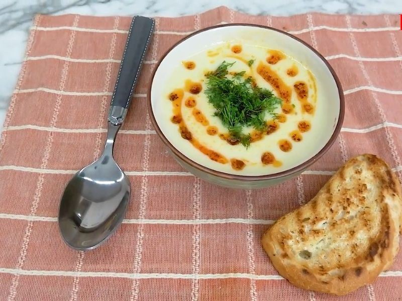
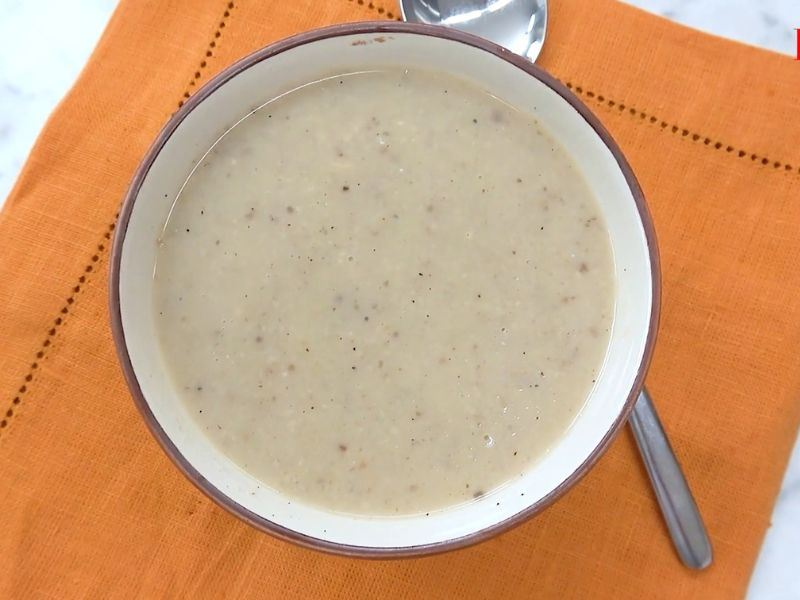
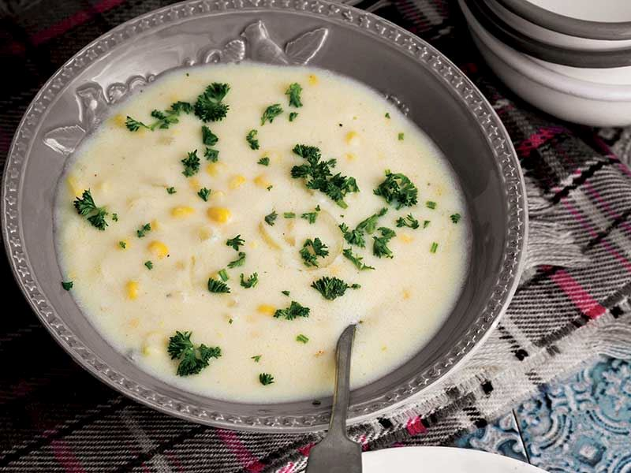
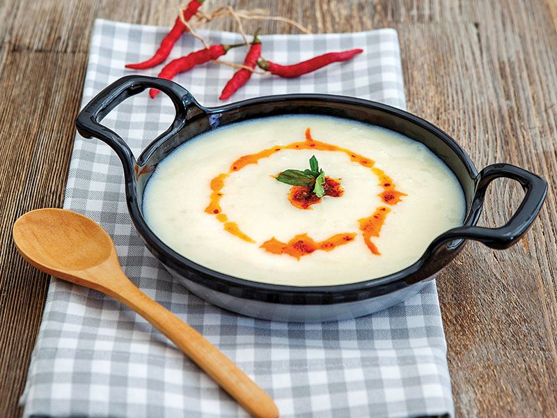
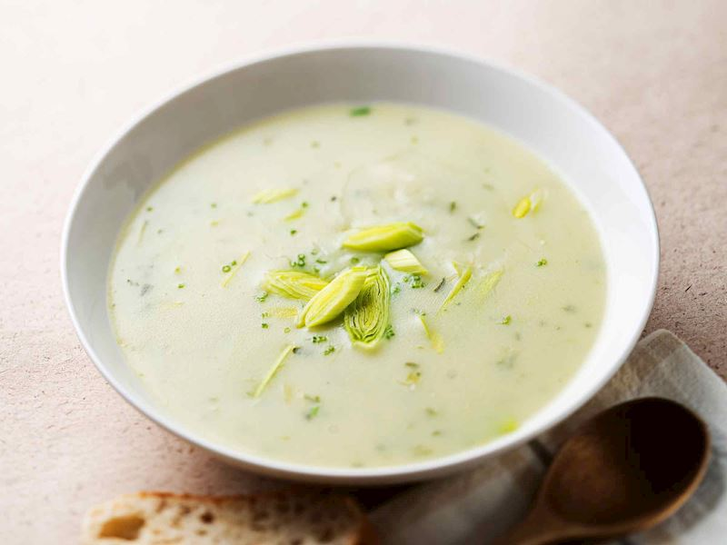

Çorba Tarifleri

Kabak Çorbası
Lezzetli ve sağlıklı bir seçenek.
Hafif ve lezzetli

Kremalı Mantar Çorbası
Ferahlatıcı ve doyurucu.
Zengin ve kremalı

Mercimek Çorbası
Türk mutfağının vazgeçilmezi.
Doyurucu ve sağlıklı

Mısır Çorbası
Yumuşacık ve lezzetli.
Tatlı ve kremsi

Pirinç Çorbası
Hafif ve besleyici.
Hafif ve besleyici

Pırasa Çorbası
Lezzetli ve sağlıklı bir seçenek.
Sağlıklı ve lezzetli